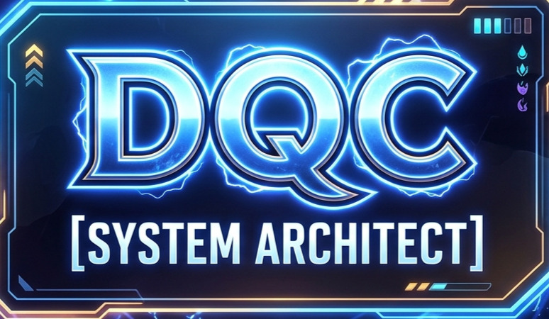

SYSTEM LEVELING es un ecosistema en desarrollo basado en la serie solo leveling. dicho eco sistema lo que busca es la mejora del usuario en algun aspecto que el quiera.
Actualmente este aun esta en desarrolo muy temprano ya que apenas se cuenta con informacion suficiente como para definirlo correctamente.
¿QUE ES SYSTEM LEVELING?
¿CUAL ES SU MISION?
La mision de SYSTEM LEVELING es la ayuda al usuario en su vida cotidiana intentando abarcar desde los problemas mas simples como hasta los mas complejos.
¿QUIEN LO ESTA DESARROLLANDO?
SU DESARROLLADOR ACTUAL ES DQC
